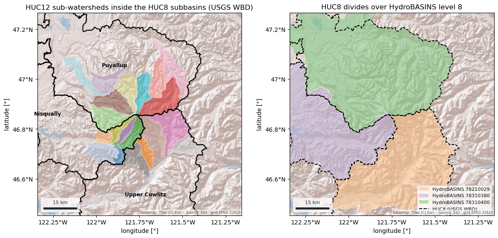
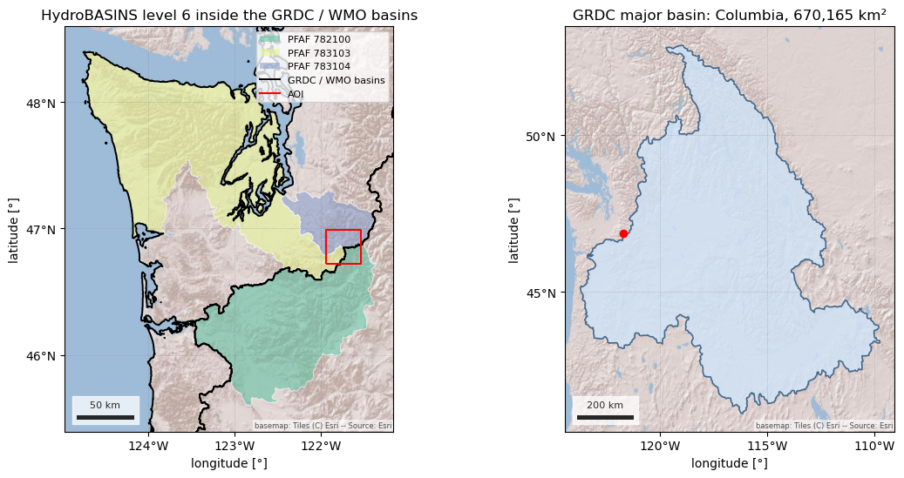

Note
Go to the end to download the full example code.
Basins: HUC, HydroBASINS and GRDC#
Four basin products answer the same question, “which drainage is this in?”, at different scales and for different parts of the world. The USGS Watershed Boundary Dataset (HUC) nests the United States from 2-digit regions to 16-digit sub-watersheds. HydroBASINS is the global equivalent, Pfafstetter levels 1 to 12. The GRDC layers are coarse and whole-world: 405 major river basins, and the WMO basins and sub-basins with their region numbers.
Every loader returns a GeoDataFrame in EPSG:4326 holding the features that
intersect the AOI, whole and uncut. HUC defaults to the public USGS ArcGIS
REST service and needs no account; source="gee" reads the 2017 snapshot on
Earth Engine instead. HydroBASINS defaults to the 2.7 GB BasinATLAS
geodatabase (with its several hundred attributes, read with mask pushdown),
or, as here, source="hydrosheds" fetches one ~300 MB regional zip with the
geometry and Pfafstetter fields only. The GRDC layers are single zips. Nothing
executed on this page needs credentials.
The first figure fills the HUC12 sub-watersheds inside the HUC8 subbasins, then lays the HUC8 divides over HydroBASINS level 8: two independent delineations of the same drainage. The second nests level 6 inside the WMO basins and steps out to the GRDC major basin the whole AOI drains to.
AOI(bounds=(-121.9400, 46.7200, -121.5400, 46.9900), clip=True) EPSG:32610
Where each product comes from, and what the route asks for.
for product_id in ("huc", "hydrobasins", "grdc-major-river-basins", "grdc-wmo-basins"):
for src in esd.catalog.get(product_id).sources:
print(
f"{product_id:24} {src.id:20} {src.title:28} {', '.join(src.requires) or 'no account'}"
)
huc usgs-wbd USGS WBD (ArcGIS REST) no account
huc gee Earth Engine earthengine
hydrobasins figshare-basinatlas figshare BasinATLAS gdb no account
hydrobasins hydrosheds HydroSHEDS regional zips no account
hydrobasins gee Earth Engine earthengine
grdc-major-river-basins world-bank World Bank zip no account
grdc-wmo-basins grdc GRDC zip no account
HUC8 subbasins and HUC12 sub-watersheds from the REST service. The loader pages the service in small blocks, because one unpaged HUC12 query over a large box times out and comes back as HTML rather than GeoJSON.
huc8_gdf = esd.hydro.basins.huc(aoi, level=8)
huc12_gdf = esd.hydro.basins.huc(aoi, level=12)
print(huc8_gdf[["name", "huc8", "areasqkm", "states"]].to_string(index=False))
print(f"{len(huc12_gdf)} HUC12 sub-watersheds intersect the box")
name huc8 areasqkm states
Nisqually 17110015 1994.47 WA
Puyallup 17110014 2533.97 WA
Upper Cowlitz 17080004 2655.30 WA
20 HUC12 sub-watersheds intersect the box
The same call with source="gee" returns the same columns from the 2017
WBD snapshot on Earth Engine, for users who already hold an account:
huc8_gee_gdf = esd.hydro.basins.huc(aoi, level=8, source="gee")
The geometries differ slightly from the REST service’s, which is current and rounds coordinates to six decimals.
HydroBASINS, here from the HydroATLAS copy on Earth Engine. The HydroSHEDS
regional zip (source="hydrosheds", no account, cached after the first
download) serves the same polygons, but that server refuses cloud-runner
addresses such as the one this page is built on, so the Earth Engine route
is used for the build; on your own machine either works. PFAF_ID is the
Pfafstetter code: every digit is one level of nesting, so a level-8 basin’s
level-6 parent is its first six digits. Level 8 here is 1 500 to 2 600 km²
per basin, the size of a HUC8.
hybas_source = "hydrosheds"
try:
hybas8_gdf = esd.hydro.basins.hydrobasins(aoi, level=8, source=hybas_source)
except Exception as exc: # the HydroSHEDS server blocks some networks
print(
f"HydroSHEDS route unavailable here ({type(exc).__name__}); using Earth Engine"
)
hybas8_gdf = esd.hydro.basins.hydrobasins(aoi, level=8, source="gee")
print(hybas8_gdf[["HYBAS_ID", "PFAF_ID", "SUB_AREA", "UP_AREA"]].to_string(index=False))
0%| | 0.00/317M [00:00<?, ?B/s]
0%| | 863k/317M [00:00<00:39, 7.98MB/s]
1%|▏ | 1.66M/317M [00:00<00:47, 6.58MB/s]
1%|▎ | 2.42M/317M [00:00<00:45, 6.97MB/s]
1%|▍ | 3.41M/317M [00:00<00:39, 7.92MB/s]
1%|▌ | 4.21M/317M [00:00<00:50, 6.16MB/s]
2%|▌ | 4.89M/317M [00:00<00:49, 6.29MB/s]
2%|▋ | 5.55M/317M [00:00<00:51, 6.06MB/s]
2%|▊ | 6.29M/317M [00:00<00:49, 6.26MB/s]
2%|▊ | 6.94M/317M [00:01<00:56, 5.50MB/s]
2%|▉ | 7.51M/317M [00:01<01:01, 4.99MB/s]
3%|▉ | 8.19M/317M [00:01<00:58, 5.28MB/s]
3%|█ | 8.74M/317M [00:01<01:01, 5.03MB/s]
3%|█ | 9.26M/317M [00:01<01:00, 5.04MB/s]
3%|█▏ | 9.77M/317M [00:01<01:02, 4.90MB/s]
3%|█▎ | 10.4M/317M [00:01<00:58, 5.25MB/s]
3%|█▎ | 11.0M/317M [00:02<01:13, 4.14MB/s]
4%|█▎ | 11.4M/317M [00:02<01:24, 3.60MB/s]
4%|█▍ | 11.8M/317M [00:02<01:26, 3.51MB/s]
4%|█▍ | 12.2M/317M [00:02<01:31, 3.32MB/s]
4%|█▌ | 12.5M/317M [00:02<01:32, 3.28MB/s]
4%|█▌ | 12.9M/317M [00:02<01:39, 3.05MB/s]
4%|█▌ | 13.3M/317M [00:02<01:33, 3.25MB/s]
5%|█▊ | 15.1M/317M [00:02<00:44, 6.72MB/s]
5%|█▉ | 15.8M/317M [00:03<00:43, 6.93MB/s]
5%|██ | 16.7M/317M [00:03<00:40, 7.34MB/s]
6%|██ | 17.5M/317M [00:03<00:40, 7.43MB/s]
6%|██▏ | 18.3M/317M [00:03<00:42, 7.09MB/s]
6%|██▎ | 19.3M/317M [00:03<00:37, 7.86MB/s]
6%|██▍ | 20.2M/317M [00:03<00:36, 8.16MB/s]
7%|██▌ | 21.2M/317M [00:03<00:33, 8.75MB/s]
7%|██▋ | 22.1M/317M [00:03<00:37, 7.84MB/s]
7%|██▊ | 22.9M/317M [00:03<00:39, 7.45MB/s]
7%|██▊ | 23.7M/317M [00:04<00:39, 7.43MB/s]
8%|██▉ | 24.4M/317M [00:04<00:47, 6.10MB/s]
8%|███ | 25.1M/317M [00:04<00:47, 6.20MB/s]
8%|███▏ | 26.6M/317M [00:04<00:34, 8.35MB/s]
9%|███▎ | 27.5M/317M [00:04<00:42, 6.73MB/s]
9%|███▍ | 28.2M/317M [00:04<00:42, 6.84MB/s]
10%|███▉ | 32.7M/317M [00:04<00:17, 16.1MB/s]
12%|████▌ | 38.1M/317M [00:04<00:11, 24.5MB/s]
13%|████▉ | 40.7M/317M [00:05<00:16, 16.3MB/s]
14%|█████▏ | 42.8M/317M [00:05<00:18, 14.8MB/s]
14%|█████▎ | 44.6M/317M [00:05<00:22, 12.4MB/s]
15%|█████▌ | 46.1M/317M [00:05<00:21, 12.5MB/s]
15%|█████▋ | 47.6M/317M [00:05<00:22, 11.7MB/s]
15%|█████▊ | 48.9M/317M [00:06<00:22, 12.0MB/s]
16%|██████ | 50.2M/317M [00:06<00:22, 11.7MB/s]
17%|██████▍ | 54.1M/317M [00:06<00:14, 18.2MB/s]
18%|██████▋ | 56.2M/317M [00:06<00:16, 15.9MB/s]
21%|███████▊ | 65.3M/317M [00:06<00:07, 33.7MB/s]
24%|█████████ | 75.9M/317M [00:06<00:04, 51.7MB/s]
27%|██████████▍ | 86.5M/317M [00:06<00:03, 66.1MB/s]
31%|███████████▋ | 97.1M/317M [00:06<00:02, 77.2MB/s]
34%|█████████████▎ | 108M/317M [00:06<00:02, 85.6MB/s]
37%|██████████████▌ | 119M/317M [00:07<00:02, 91.9MB/s]
41%|███████████████▉ | 129M/317M [00:07<00:01, 96.4MB/s]
44%|█████████████████▏ | 140M/317M [00:07<00:01, 98.6MB/s]
47%|██████████████████▉ | 150M/317M [00:07<00:01, 101MB/s]
51%|████████████████████▎ | 161M/317M [00:07<00:01, 103MB/s]
54%|█████████████████████▋ | 172M/317M [00:07<00:01, 104MB/s]
58%|███████████████████████ | 182M/317M [00:07<00:01, 105MB/s]
61%|████████████████████████▍ | 193M/317M [00:07<00:01, 106MB/s]
64%|█████████████████████████▊ | 204M/317M [00:07<00:01, 106MB/s]
68%|███████████████████████████▏ | 215M/317M [00:07<00:00, 107MB/s]
71%|████████████████████████████▌ | 226M/317M [00:08<00:00, 108MB/s]
75%|█████████████████████████████▉ | 237M/317M [00:08<00:00, 108MB/s]
78%|███████████████████████████████▏ | 247M/317M [00:08<00:00, 107MB/s]
82%|████████████████████████████████▌ | 258M/317M [00:08<00:00, 108MB/s]
85%|█████████████████████████████████▉ | 269M/317M [00:08<00:00, 108MB/s]
88%|███████████████████████████████████▎ | 280M/317M [00:08<00:00, 108MB/s]
92%|████████████████████████████████████▋ | 291M/317M [00:08<00:00, 108MB/s]
95%|██████████████████████████████████████ | 302M/317M [00:08<00:00, 108MB/s]
99%|███████████████████████████████████████▍| 312M/317M [00:08<00:00, 108MB/s]
0%| | 0.00/317M [00:00<?, ?B/s]
100%|███████████████████████████████████████| 317M/317M [00:00<00:00, 1.55TB/s]
HYBAS_ID PFAF_ID SUB_AREA UP_AREA
7080371080 78210029 1520.0 1520.3
7080015820 78310380 1878.7 1878.7
7080015900 78310400 2637.9 2637.9
Left: HUC12s coloured by name inside the HUC8 outlines. Right: the HUC8
divides over HydroBASINS level 8. The two products were drawn from
different elevation models by different rules, and their main divides still
agree closely; the units are not one-to-one, though: 78210029 covers
1 520 km² of the 2 655 km² Upper Cowlitz HUC8, the rest falling in level-8
units that do not touch the box and so were not returned. Vector layers
draw with geopandas, here reprojected to the AOI’s UTM zone; finish_map
adds the basemap, graticule and scale bar.
huc8_utm_gdf, huc12_utm_gdf, hybas8_utm_gdf = (
basin_gdf.to_crs(utm) for basin_gdf in (huc8_gdf, huc12_gdf, hybas8_gdf)
)
fig, axes = plt.subplots(1, 2, figsize=(12, 5.6))
huc12_utm_gdf.plot(
ax=axes[0],
column="name",
cmap="tab20",
alpha=0.55,
edgecolor="white",
linewidth=0.5,
)
huc8_utm_gdf.boundary.plot(ax=axes[0], color="black", linewidth=1.6)
for _, row in huc8_utm_gdf.iterrows():
axes[0].annotate(
row["name"],
row.geometry.centroid.coords[0],
ha="center",
fontsize=9,
fontweight="bold",
)
axes[0].set_title("HUC12 sub-watersheds inside the HUC8 subbasins (USGS WBD)")
palette8 = dict(
zip(hybas8_gdf["PFAF_ID"], ("#fdc086", "#beaed4", "#7fc97f"), strict=True)
)
hybas8_utm_gdf.plot(
ax=axes[1],
color=hybas8_utm_gdf["PFAF_ID"].map(palette8),
alpha=0.55,
edgecolor="white",
linewidth=0.8,
)
huc8_utm_gdf.boundary.plot(ax=axes[1], color="black", linewidth=1.4, linestyle="--")
axes[1].legend(
handles=[
*[
Patch(facecolor=c, alpha=0.55, label=f"HydroBASINS {k}")
for k, c in palette8.items()
],
Line2D(
[],
[],
color="black",
linewidth=1.4,
linestyle="--",
label="HUC8 (USGS WBD)",
),
],
fontsize=8,
loc="lower right",
)
axes[1].set_title("HUC8 divides over HydroBASINS level 8")
x0, y0, x1, y1 = box.to_crs(utm).total_bounds
for ax in axes:
ax.set_xlim(x0 - 30_000, x1 + 30_000)
ax.set_ylim(y0 - 30_000, y1 + 30_000)
esd.plotting.finish_map(ax, utm, basemap=True)
fig.tight_layout()

The GRDC layers. The WMO basins carry region numbers and names; the major
river basins are one polygon each. The shipped area columns of the major
basins layer (ACRES, LAEA_HA) are zero in this release, so the area
below is taken from the geometry in an equal-area projection.
wmo_gdf = esd.hydro.basins.grdc_wmo(aoi)
print(
wmo_gdf[["WMOBB", "WMOBB_NAME", "REGNAME", "SUM_SUB_AREA"]].to_string(index=False)
)
major_gdf = esd.hydro.basins.grdc_major(aoi)
area_km2 = major_gdf.to_crs("ESRI:102008").area.iloc[0] / 1e6
print(
f"{major_gdf.iloc[0]['NAME']} basin: shipped ACRES={major_gdf.iloc[0]['ACRES']}, geometry {area_km2:,.0f} km2"
)
0%| | 0.00/379M [00:00<?, ?B/s]
0%| | 9.22k/379M [00:00<1:29:06, 70.8kB/s]
0%| | 72.7k/379M [00:00<21:04, 299kB/s]
0%| | 161k/379M [00:00<13:49, 457kB/s]
0%| | 272k/379M [00:00<10:22, 608kB/s]
0%| | 434k/379M [00:00<07:42, 817kB/s]
0%| | 633k/379M [00:00<06:05, 1.03MB/s]
0%| | 913k/379M [00:00<04:35, 1.37MB/s]
0%| | 1.21M/379M [00:01<03:52, 1.62MB/s]
0%|▏ | 1.53M/379M [00:01<03:24, 1.85MB/s]
1%|▏ | 1.99M/379M [00:01<02:43, 2.31MB/s]
1%|▏ | 2.39M/379M [00:01<02:29, 2.51MB/s]
1%|▎ | 3.04M/379M [00:01<01:57, 3.19MB/s]
1%|▎ | 3.54M/379M [00:01<01:52, 3.32MB/s]
1%|▍ | 4.54M/379M [00:01<01:22, 4.53MB/s]
2%|▌ | 5.82M/379M [00:02<01:02, 6.00MB/s]
2%|▋ | 6.88M/379M [00:02<00:57, 6.52MB/s]
2%|▉ | 8.80M/379M [00:02<00:42, 8.78MB/s]
3%|█▏ | 11.4M/379M [00:02<00:31, 11.7MB/s]
4%|█▍ | 13.8M/379M [00:02<00:26, 13.7MB/s]
5%|█▋ | 17.3M/379M [00:02<00:23, 15.5MB/s]
5%|██ | 20.8M/379M [00:02<00:19, 18.3MB/s]
6%|██▎ | 23.4M/379M [00:03<00:19, 18.6MB/s]
7%|██▌ | 25.3M/379M [00:03<00:20, 17.0MB/s]
8%|██▉ | 29.0M/379M [00:03<00:17, 20.1MB/s]
9%|███▎ | 32.7M/379M [00:03<00:15, 22.1MB/s]
10%|███▋ | 36.5M/379M [00:03<00:14, 23.5MB/s]
11%|████ | 39.9M/379M [00:03<00:14, 23.7MB/s]
11%|████▏ | 42.3M/379M [00:03<00:15, 21.7MB/s]
12%|████▌ | 46.0M/379M [00:04<00:14, 23.4MB/s]
13%|█████ | 50.0M/379M [00:04<00:13, 25.0MB/s]
14%|█████▍ | 54.0M/379M [00:04<00:12, 26.2MB/s]
15%|█████▊ | 58.1M/379M [00:04<00:11, 27.1MB/s]
16%|██████▏ | 62.1M/379M [00:04<00:11, 27.6MB/s]
17%|██████▋ | 66.1M/379M [00:04<00:11, 28.1MB/s]
19%|███████ | 70.2M/379M [00:04<00:10, 28.3MB/s]
20%|███████▍ | 74.2M/379M [00:04<00:10, 28.6MB/s]
21%|███████▊ | 78.2M/379M [00:05<00:10, 28.6MB/s]
22%|████████▎ | 82.3M/379M [00:05<00:10, 28.8MB/s]
23%|████████▋ | 86.2M/379M [00:05<00:10, 28.7MB/s]
24%|█████████ | 90.3M/379M [00:05<00:09, 28.9MB/s]
25%|█████████▍ | 94.4M/379M [00:05<00:09, 29.0MB/s]
26%|█████████▉ | 98.4M/379M [00:05<00:09, 29.0MB/s]
27%|██████████▌ | 102M/379M [00:05<00:09, 29.1MB/s]
28%|██████████▉ | 107M/379M [00:06<00:09, 28.8MB/s]
29%|███████████▎ | 109M/379M [00:06<00:16, 16.6MB/s]
29%|███████████▍ | 112M/379M [00:06<00:23, 11.6MB/s]
30%|███████████▊ | 115M/379M [00:07<00:19, 13.6MB/s]
31%|████████████ | 117M/379M [00:07<00:17, 14.9MB/s]
32%|████████████▌ | 122M/379M [00:07<00:14, 18.2MB/s]
33%|████████████▉ | 126M/379M [00:07<00:12, 20.9MB/s]
34%|█████████████▎ | 129M/379M [00:07<00:11, 22.3MB/s]
35%|█████████████▋ | 133M/379M [00:07<00:10, 24.2MB/s]
36%|██████████████ | 137M/379M [00:07<00:09, 24.5MB/s]
37%|██████████████▌ | 141M/379M [00:08<00:09, 25.8MB/s]
38%|██████████████▉ | 145M/379M [00:08<00:08, 26.9MB/s]
39%|███████████████▎ | 149M/379M [00:08<00:08, 27.5MB/s]
40%|███████████████▊ | 153M/379M [00:08<00:08, 28.1MB/s]
42%|████████████████▏ | 157M/379M [00:08<00:07, 28.6MB/s]
43%|████████████████▌ | 161M/379M [00:08<00:07, 28.6MB/s]
44%|█████████████████ | 165M/379M [00:08<00:07, 28.8MB/s]
45%|█████████████████▍ | 169M/379M [00:09<00:07, 29.0MB/s]
46%|█████████████████▉ | 174M/379M [00:09<00:07, 29.2MB/s]
47%|██████████████████▎ | 178M/379M [00:09<00:06, 29.6MB/s]
48%|██████████████████▋ | 182M/379M [00:09<00:06, 29.6MB/s]
49%|███████████████████▏ | 186M/379M [00:09<00:06, 29.5MB/s]
50%|███████████████████▌ | 190M/379M [00:09<00:06, 29.5MB/s]
51%|███████████████████▉ | 194M/379M [00:09<00:06, 28.9MB/s]
52%|████████████████████▍ | 198M/379M [00:09<00:06, 28.8MB/s]
53%|████████████████████▊ | 202M/379M [00:10<00:06, 29.0MB/s]
54%|█████████████████████▏ | 206M/379M [00:10<00:06, 28.3MB/s]
55%|█████████████████████▌ | 210M/379M [00:10<00:05, 28.5MB/s]
56%|██████████████████████ | 214M/379M [00:10<00:05, 28.7MB/s]
57%|██████████████████████▍ | 218M/379M [00:10<00:05, 28.4MB/s]
59%|██████████████████████▊ | 222M/379M [00:10<00:05, 28.7MB/s]
60%|███████████████████████▏ | 226M/379M [00:10<00:05, 28.8MB/s]
61%|███████████████████████▋ | 230M/379M [00:11<00:05, 28.8MB/s]
62%|████████████████████████ | 234M/379M [00:11<00:05, 29.0MB/s]
63%|████████████████████████▍ | 238M/379M [00:11<00:04, 28.7MB/s]
64%|████████████████████████▉ | 242M/379M [00:11<00:04, 28.9MB/s]
65%|█████████████████████████▎ | 246M/379M [00:11<00:04, 29.1MB/s]
66%|█████████████████████████▋ | 250M/379M [00:11<00:04, 29.1MB/s]
67%|██████████████████████████▏ | 254M/379M [00:11<00:04, 29.2MB/s]
68%|██████████████████████████▌ | 258M/379M [00:12<00:04, 29.2MB/s]
69%|███████████████████████████ | 262M/379M [00:12<00:03, 29.7MB/s]
70%|███████████████████████████▍ | 266M/379M [00:12<00:03, 29.7MB/s]
71%|███████████████████████████▉ | 271M/379M [00:12<00:03, 30.0MB/s]
73%|████████████████████████████▎ | 275M/379M [00:12<00:03, 29.8MB/s]
74%|████████████████████████████▋ | 279M/379M [00:12<00:03, 29.7MB/s]
75%|█████████████████████████████▏ | 283M/379M [00:12<00:03, 29.5MB/s]
76%|█████████████████████████████▌ | 287M/379M [00:13<00:03, 29.5MB/s]
77%|█████████████████████████████▉ | 291M/379M [00:13<00:02, 29.4MB/s]
78%|██████████████████████████████▍ | 295M/379M [00:13<00:02, 29.4MB/s]
79%|██████████████████████████████▊ | 299M/379M [00:13<00:02, 29.3MB/s]
80%|███████████████████████████████▏ | 303M/379M [00:13<00:02, 29.4MB/s]
81%|███████████████████████████████▋ | 307M/379M [00:13<00:02, 29.2MB/s]
82%|████████████████████████████████ | 312M/379M [00:13<00:02, 29.5MB/s]
83%|████████████████████████████████▍ | 316M/379M [00:14<00:02, 29.3MB/s]
84%|████████████████████████████████▉ | 320M/379M [00:14<00:02, 29.3MB/s]
85%|█████████████████████████████████▎ | 324M/379M [00:14<00:01, 29.1MB/s]
87%|█████████████████████████████████▋ | 328M/379M [00:14<00:01, 29.1MB/s]
88%|██████████████████████████████████▏ | 332M/379M [00:14<00:01, 29.1MB/s]
89%|██████████████████████████████████▌ | 336M/379M [00:14<00:01, 29.2MB/s]
90%|██████████████████████████████████▉ | 340M/379M [00:14<00:01, 29.2MB/s]
91%|███████████████████████████████████▍ | 344M/379M [00:14<00:01, 29.3MB/s]
92%|███████████████████████████████████▊ | 348M/379M [00:15<00:01, 29.3MB/s]
93%|████████████████████████████████████▏ | 351M/379M [00:15<00:00, 27.7MB/s]
94%|████████████████████████████████████▌ | 355M/379M [00:15<00:00, 28.2MB/s]
95%|█████████████████████████████████████ | 359M/379M [00:15<00:00, 28.4MB/s]
96%|█████████████████████████████████████▍ | 364M/379M [00:15<00:00, 28.8MB/s]
97%|█████████████████████████████████████▊ | 368M/379M [00:15<00:00, 28.9MB/s]
98%|██████████████████████████████████████▎| 372M/379M [00:15<00:00, 28.9MB/s]
99%|██████████████████████████████████████▋| 376M/379M [00:16<00:00, 29.0MB/s]
0%| | 0.00/379M [00:00<?, ?B/s]
100%|███████████████████████████████████████| 379M/379M [00:00<00:00, 2.12TB/s]
WMOBB WMOBB_NAME REGNAME SUM_SUB_AREA
415 COLUMBIA (ex 416) North America, Central America and the Caribbean 390679.1
446 North Pacific (ex 341, 405, 406, 445, 455, 456, 457, 471, 474, 477) North America, Central America and the Caribbean 386726.3
Columbia basin: shipped ACRES=0.002, geometry 670,165 km2
Left: level-6 HydroBASINS (fill) inside the WMO basins (outline: the Columbia, and the North Pacific coastal basins), with the AOI in red. Right: the GRDC major basin, the Columbia, with the same AOI as a dot, to show the scale jump from a sub-watershed to a continental basin.
hybas6_gdf = esd.hydro.basins.hydrobasins(aoi, level=6, source=hybas_source)
fig, axes = plt.subplots(1, 2, figsize=(12, 5.6))
palette6 = dict(
zip(hybas6_gdf["PFAF_ID"], ("#66c2a5", "#e6f598", "#8da0cb"), strict=True)
)
hybas6_gdf.plot(
ax=axes[0],
color=hybas6_gdf["PFAF_ID"].map(palette6),
alpha=0.6,
edgecolor="white",
linewidth=0.8,
)
wmo_gdf.boundary.plot(ax=axes[0], color="black", linewidth=1.4)
esd.aoi.parse_aoi(aoi).footprint.boundary.plot(ax=axes[0], color="red", linewidth=1.5)
handles = [
Patch(facecolor=c, alpha=0.6, label=f"PFAF {k}") for k, c in palette6.items()
]
handles += [
Line2D([], [], color="black", linewidth=1.4, label="GRDC / WMO basins"),
Line2D([], [], color="red", linewidth=1.5, label="AOI"),
]
axes[0].legend(handles=handles, fontsize=8, loc="upper right")
x0, y0, x1, y1 = hybas6_gdf.total_bounds
axes[0].set_xlim(x0 - 0.2, x1 + 0.2)
axes[0].set_ylim(y0 - 0.2, y1 + 0.2)
axes[0].set_title("HydroBASINS level 6 inside the GRDC / WMO basins")
major_gdf.plot(
ax=axes[1], facecolor="#cfe3f7", edgecolor="#1f4e79", linewidth=1.2, alpha=0.8
)
axes[1].plot(
*esd.aoi.parse_aoi(aoi).geometry.centroid.coords[0],
marker="o",
color="red",
markersize=6,
)
axes[1].set_title(f"GRDC major basin: {major_gdf.iloc[0]['NAME']}, {area_km2:,.0f} km²")
for ax in axes:
esd.plotting.finish_map(ax, hybas6_gdf.crs, basemap=True)
fig.tight_layout()

Total running time of the script: (0 minutes 44.748 seconds)